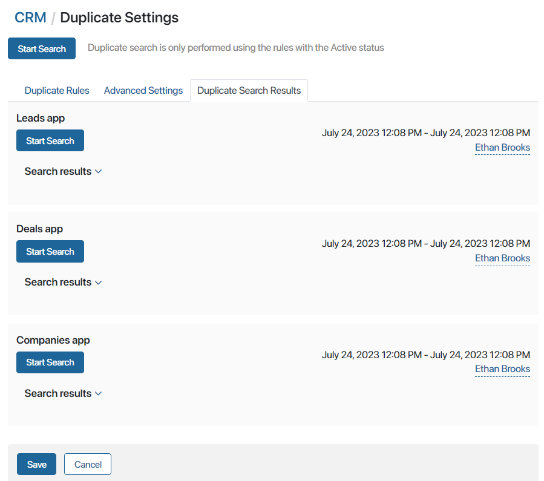
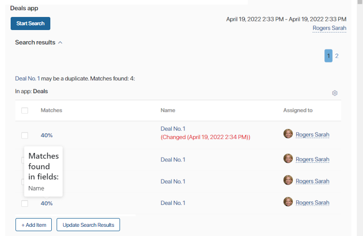

App items with overlapping data can be found not only when a new item is being created, but also when searching for duplicates among existing app items.
You should search for duplicates when:
- You have just enabled a duplicate search rule or changed its settings.
- You have imported a large amount of data, for example, added a new customer database.
- Some app items have been created automatically, for example, when leads are added using a web form on your website.
Start search using all configured rules
To search for duplicates using active rules:
- Click the gear icon next to the workspace name and select Duplicate Settings.
- On the page that opens, click Start Search. Depending on the number of items in the apps and the enabled rules, the duplicate check may take a long while. When the system completes the search, you will get a notification.
- Go to the Duplicate Search Results tab. Here you will see all the overlapping app items in the apps that rules were enabled for.
Start duplicate search within an app
You can check each app for duplicates separately. For example, you may have enabled new rules for an app and now you want to run a duplicate search only within this app. To do that, go to the Duplicate Search Results tab and click the Start Search button under the name of the app.
Search results
On the Duplicate Search Result tab, the records are are displayed separately for every app the search was enabled for. To the right of the app’s name, you can see the date the last search was conducted and the name of the user who started it.

To see all the potential duplicates in an app, open the corresponding drop-down list by clicking the arrow next to Search results. You will see links to potential duplicates and lists of app items that they have overlaps with.

Search results may be displayed on several pages. To go to another page, click its number.
You can customize the duplicate search table. To do that, click the gear icon in the upper right corner of the duplicate list. In the window that opens, select the fields that are going to be displayed in the table, and click Save.
To see which fields matches were found in, click the percentage near the duplicate’s name. If an app item was edited after the last duplicate search, you will see the date and time the changes were made near its name. In this case, you can click the Update Search Results button under the duplicate search table.
You can process a duplicate by checking the box on the left of the matching percentage. Read more in the Mark an app item as a duplicate article.
Found a typo? Select it and press Ctrl+Enter to send us feedback